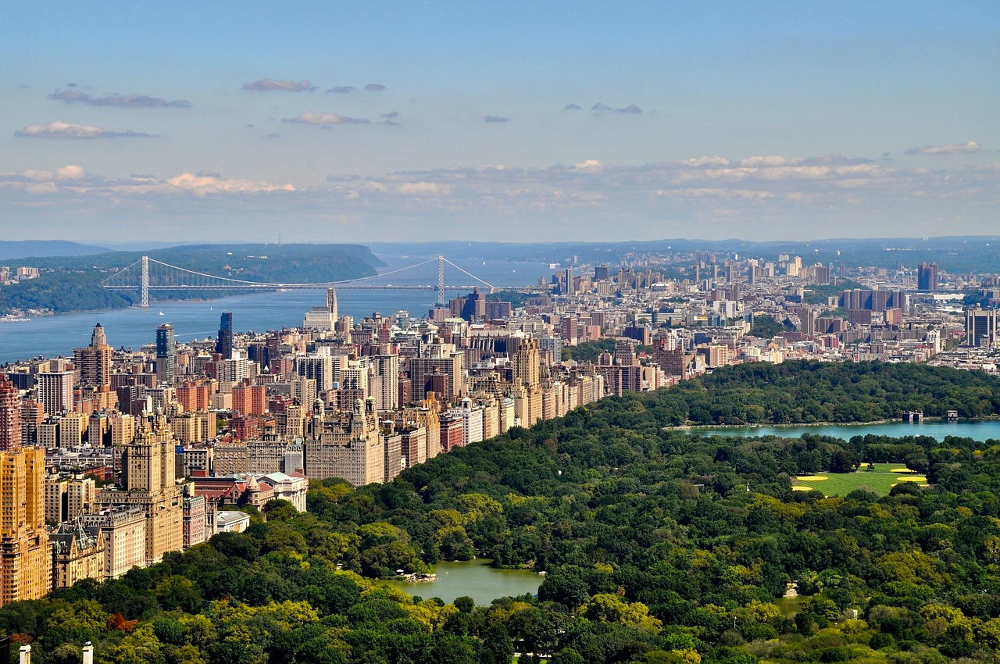
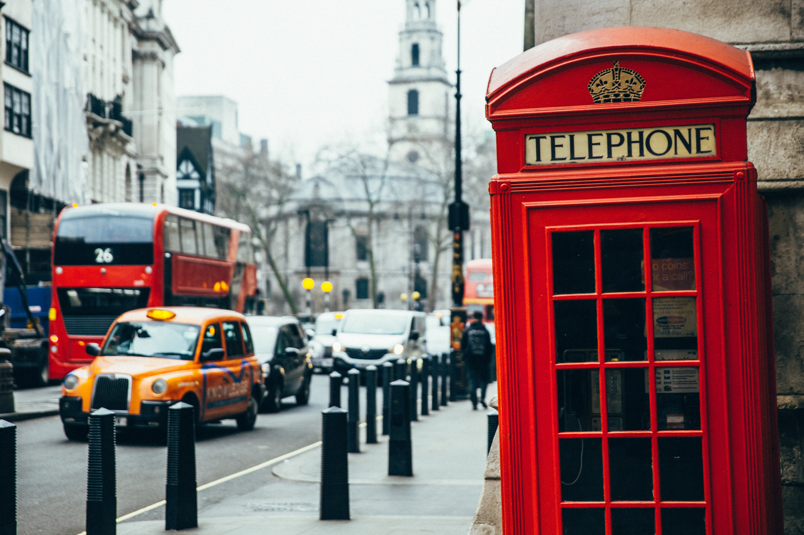

Central Park, NYC
insert_invitation16 de Enero de 2017
location_onNew York, Estados Unidos
El Central Park es un parque urbano público situado en el distrito metropolitano de Manhattan, en la ciudad de Nueva York, Estados Unidos. El parque tiene forma rectangular y dimensiones aproximadas de 4000 x 800 m, siendo más grande que dos de las naciones más pequeñas del mundo; es casi dos veces más grande que Mónaco y casi ocho veces más que la Ciudad del Vaticano.123
Con unos 37,5 millones de visitantes al año, Central Park es el parque más visitado de los Estados Unidos4 (aunque el Fairmount Park de Filadelfia es diez veces más grande, Central Park tiene 2,5 veces más visitantes,5 y los 37,5 millones de visitantes anuales que recibe Central Park quintuplican los que visitan el Parque nacional del Gran Cañón, en Arizona6). Además, su aparición en numerosas películas y en programas de televisión, lo ha convertido en uno de los parques urbanos más famosos del mundo.7 El parque está dirigido por la Central Park Conservancy, una empresa privada sin ánimo de lucro, que tiene un contrato con el Departamento de Parques y Ocio de Nueva York.8
Central Park limita por el norte con la 110th Street, por el oeste con la calle Central Park West, por el sur con la 59th Street y por el este con la Quinta Avenida. Los tramos de estas calles que pasan alrededor de Central Park son conocidas normalmente con el nombre de Central Park North, Central Park South y Central Park West, respectivamente; aunque la Quinta Avenida conserva su nombre a su paso por el lado este del parque.9 Central Park tiene su propia sección censal en los Estados Unidos, la número 143. Según el Censo de 2000, la población del parque es de dieciocho personas, doce hombres y seis mujeres, con una media de edad de 38,5 años.10 El actual valor inmobiliario de Central Park se estima que es de unos 528 783 552 000 dólares según la apreciación de Miller Samuel.11

Londres
insert_invitation19 de Marzo de 2017
location_onLondres, Inglaterra
En esta ciudad multirracial convive gente de un gran número de culturas que hablan más de trescientos idiomas distintos. La Autoridad del Gran Londres estima que en 2015 la ciudad tiene 8,63 millones de habitantes, una cifra que la convierte en el municipio más poblado de la Unión Europea y que supone el 12,5 % del total de habitantes del Reino Unido. El área urbana del Gran Londres, con 10 470 00025 habitantes, es la segunda más grande de Europa, pero su área metropolitana, con una población estimada de entre 12 y 14 millones, es la mayor del continente. Desde 1831 a 1925 Londres, como capital del Imperio británico, fue la ciudad más poblada del mundo.
Londres cuenta con cuatro enclaves declarados Patrimonio de la Humanidad: la Torre de Londres, el Real Jardín Botánico de Kew, el sitio formado por el Palacio, la Abadía de Westminster, la Iglesia de Santa Margarita y Greenwich (donde se encuentra el Real Observatorio que marca el meridiano de Greenwich y el tiempo medio). Otros lugares famosos de la ciudad son el Palacio de Buckingham, el London Eye, Piccadilly Circus, la Catedral de San Pablo, el Puente de la Torre o Trafalgar Square. Londres cuenta también con numerosos museos, galerías de arte, bibliotecas, eventos deportivos y otras instituciones culturales como el Museo Británico, la National Gallery, la Tate Modern, la Biblioteca Británica y los cuarenta teatros del West End. El metro de Londres, que en 2013 cumplió 150 años, es el más antiguo del mundo.